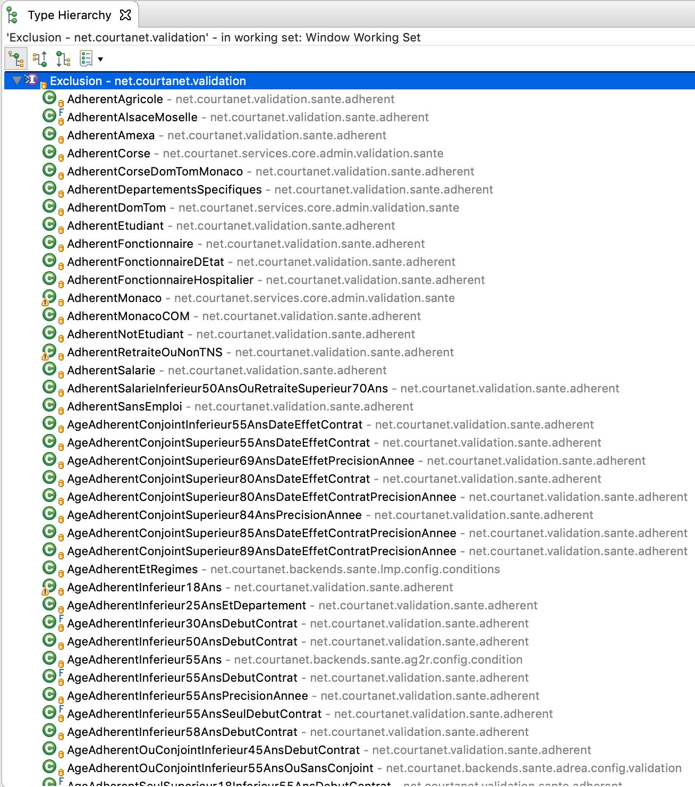

We have 100 live insurers, on 5 products, each with business validation rules, that filter prospects based on their profile
Hierarchy of 492 legacy classes, no governance or auditability
Insurer exclusions based on object model (legacy code)
public void check(FieldContext context, FormuleMoto formule, Conducteur conducteur,
Vehicule vehicule, Void unused, Besoins besoins,
Set<EAbTestingScenario> scenarios)
throws ExclusionException {
if (besoins == null) {
return;
}
if (besoins.getDateDebutContrat() == null) {
return;
}
if (!DateHelper.isAfter(besoins.getDateDebutContrat(),
DateHelper.ajouteJoursADate(DateHelper.getToday(), NBR_JOURS),
DateHelper.EPrecision.jour)) {
throw new ExclusionException(DATE_EFFET_PLUS_60_JOURS);
}
}
Same rule, more fluent:
public ExclusionRule exclusionRule() {
return DOOV.when(dateContrat().after(todayPlusDays(60)))
.exclusionRule();
}
Domain Object Oriented Validation
a fluent API for typesafe domain model validation
dOOv : Under the hood
DOOV.when(accountCompany.eq(Company.LES_FURETS)
.and(accountPhoneNumber.startsWith("+33"))).validate();
DOOV.when(accountCompany.eq(Company.LES_FURETS)
.and(accountPhoneNumber.startsWith("+33"))).validate();
Markdown
* rule
* when
* account company = 'LES_FURETS' and
* account phone number starts with '+33'
* validate
Text
rule when (account company = LES_FURETS and account phone number starts with '+33') validate

Next step is extending the DSL to create a
bean mapping framework
It features the same AST to text and statistics functionalities.
source model
class Model {
User user;
Account account;
}
class User {
String firstName;
String lastName;
LocalDate birthdate;
}
class Account {
String email;
boolean acceptEmail;
Country country;
}
→
target model
class Employee {
String fullName;
String email;
int age;
String country;
String company;
}
Model model = ...;
Employee employee = new Employee();
// declarative mapping rule
MappingRule rules = mappings(
when(accountAcceptEmail.isTrue())
.then(map(accountEmail).to(employeeEmail)),
map(userFirstName, userLastName)
.using(biConverter((f, l) -> f + " " + l, "", "combine names"))
.to(employeeFullname),
map(userBirthdate.ageAt(today())).to(employeeAge),
map(accountCountry)
.using(converter(c -> c.name(), "country name"))
.to(employeeCountry)
);
// then execute the mapping
rules.executeOn(model, employee)
Model model = ...;
Employee employee = new Employee();
// declarative mapping rule
MappingRule rules = mappings(
when(accountAcceptEmail.isTrue())
.then(map(accountEmail).to(employeeEmail)),
map(userFirstName, userLastName)
.using(biConverter(
(f, l) -> f + " " + l, "", "combine names"))
.to(employeeFullname),
map(userBirthdate.ageAt(today())).to(employeeAge),
map(accountCountry)
.using(converter(c -> c.name(), "country name"))
.to(employeeCountry)
);
// then execute the mapping
rules.executeOn(model, employee)
map(['Napolitan', 'New York',
'StLouis', 'Pan',
'DeepDish', 'Sicilian'])
.to(crustOptions);
map(fieldValue).to(city),
when(city.eq('napoli'))
.then(
map(['Napolitan'])
.to(crustOptions)
)
when(city.eq('napoli'))
.then(
map('L').to(size)
)
map(size).to(fieldValue)
when(
matchAll(
city.eq('napoli'),
crust.notEq('Pan')
)).validate()
1000 fields with more than 3100 form interaction rules spanned over 600 classes
No governance or auditabilitydOOv in TypeScript
https://github.com/doov-io/doov-tsconst & let
const name: string = 'Bob';
let age: number = 26;
i++;
name = 'Alice';
// TS2588: Cannot assign to 'name' because it is a constant.
Arrow functions
const reverse = (v: string) => {
return v.split().reverse().join('');
}
Classes, static methods, access modifiers
class Square extends Rectangle {
readonly colour: string;
constructor(a: number, colour: string) {
super(a, a);
this.colour = colour;
}
public static area(r: Rectangle) {
return r.a * r.b;
}
}
Promises
import fs from 'fs';
function readFileAsync(filename: string): Promise<Buffer> {
return new Promise((resolve, reject) => {
fs.readFile(filename, (err, result) => {
err ? reject(err) : resolve(result);
});
});
}
Interface, Generics, Type Union & Intersection, Type Guards...
interface Square { kind: "square"; size: number; }
interface Rectangle { kind: "rectangle"; width: number; height: number; }
type Shape = Square | Rectangle
function area(s: Shape) {
return s.kind === "square" ? s.size * s.size : s.width * s.height;
}
TS
const num: number = 123;
interface WithStr {
num: number;
str: string;
}
function attachStr(num: number): WithStr {
return { num: num, str: String(num) };
}
→
JS
var num = 123;
function attachStr(num) {
return { num: num, str: String(num) };
}
Types are necessary to scale a JS app
Hides away questions about ES language level and target environment into compiler configuration
TypeScript syntax is very similar to Java(except for the right-hand side type annotations)
Business rules are easier to code, grasp and govern
Debugging is not obvious Code coverage is misleading
dOOv & dOOv-TS (framework and examples)http://github.com/doov-io
dOOv-TS Examplehttps://codesandbox.io/s/github/ozangunalp/doov-ts-example
Slideshttp://github.com/doov-io/doov-docs
Open Source & Apache Licence
Try and contribute!
"A domain-specific language (DSL) is a computer language specialized to a particular application domain. This is in contrast to a general-purpose language (GPL), which is broadly applicable across domains"

key model
// Root class of model
class Model {
User user;
}
// Add key named EMAIL
enum ModelFieldId {
EMAIL;
}
// Annotate email field
class User {
@Path(field = EMAIL
readable = ...)
String email;
}
code generate
// dOOv typed field class
class DslModel {
StringFieldInfo userEmail;
}
write rules
// Create rules by using
// generated fields
// in DslModel
DslModel
.when(userEmail.eq(...))
.validate()
// Optionaly add rules
// to a registry
.registerOn(DEFAULT);
get model
// Get model from somewhere
// or instanciate it
User user = new User();
user.setEmail("e@mail.com");
Model model = new Model();
model.setUser(user);
execute
// Use executeOn method
DslModel.when(email.matches(...))
.validate()
.executeOn(model);
// Or use the registry
DEFAULT.stream()
.map(rule -> rule.executeOn(model));
Java is verbose, but you can reduce the noise and write code like natural language with a fluent API
// JUnit API
assertEquals(9, fellowshipOfTheRing.size());
assertTrue(fellowshipOfTheRing.contains(frodo, sam));
assertFalse(fellowshipOfTheRing.contains(sauron));
// AssertJ API (fluent)
assertThat(fellowshipOfTheRing).hasSize(9)
.contains(frodo, sam)
.doesNotContain(sauron);
New elements in Java 8 makes it easier to write a fluent API
// java.util.function (io.doov.core.dsl.impl.LogicalBinaryCondition)
left.predicate().and(right.predicate()).test(model, context)
// java.util.stream (io.doov.core.dsl.impl.LogicalNaryCondition)
steps.stream().anyMatch(s -> s.predicate().test(model, context))
// lambda and method reference (io.doov.core.dsl.impl.NumericCondition)
predicate(greaterThanMetadata(field, value),
(model, context) -> Optional.ofNullable(value),
(l, r) -> greaterThanFunction().apply(l, r));
Many popular libraries propose fluent APIs like
jOOQ,
AssertJ,
Apache Spark, etc.
Dataset<Row> averagePrice = prices
.filter(value.<String>getAs("insurer")
.equals("COOL insurer"))
.groupBy("product")
.agg(avg("price").as("average"))
.orderBy(desc("average"));

Makes readable text generation possible:
we can output a multi-language rules catalog
in multiple formats (text, markdown, HTML, etc.)

We make daily statistics that helps us shape the business,
by removing or tweaking rules as needed

Validate that a profile
has at least 18 years when their country is France
and their phone number starts with '+33'
has at least 21 years when their country is Canadian
and their phone number starts with '+1'
DOOV.when(userBirthdate.ageAt(today()).greaterThan(18)
.and(accountCountry.eq(Country.FR)
.and(accountPhoneNumber.startsWith("+33")))
.or(userBirthdate.ageAt(today()).greaterThan(21)
.and(accountCountry.eq(Country.CAN)
.and(accountPhoneNumber.startsWith("+1")))))
.validate();
model.getUser().setBirthDate(LocalDate.now().minusYears(22));
model.getAccount().setCountry(Country.FR);
ValidationRule rule = DOOV
.when(userBirthdate.ageAt(today()).greaterThan(18)
.and(accountCountry.eq(Country.FR)
.and(accountPhoneNumber.startsWith("+33")))
.or(userBirthdate.ageAt(today()).greaterThan(21)
.and(accountCountry.eq(Country.CAN)
.and(accountPhoneNumber.startsWith("+1")))))
.validate();
Result result = rule.withShortCircuit(false).executeOn(wrapper);
System.out.println("> " + result.getFailureCause());
> account phone number starts with '+33'
or (account country = CAN and
account phone number starts with '+1')
Validate that a profile
has at least 18 years when their country is France
and their phone number starts with '+33'
has at least 21 years when their country is Canadian
and their phone number starts with '+1'
DOOV.when(matchAny(
matchAll(userBirthdate.ageAt(today()).greaterThan(18),
accountCountry.eq(Country.FR),
accountPhoneNumber.startsWith("+33")),
matchAll(userBirthdate.ageAt(today()).greaterThan(21),
accountCountry.eq(Country.CAN),
accountPhoneNumber.startsWith("+1"))))
.validate();
model.getUser().setBirthDate(LocalDate.now().minusYears(22));
model.getAccount().setCountry(Country.FR);
ValidationRule rule = DOOV
.when(matchAny(
matchAll(userBirthdate.ageAt(today()).greaterThan(18),
accountCountry.eq(Country.FR),
accountPhoneNumber.startsWith("+33")),
matchAll(userBirthdate.ageAt(today()).greaterThan(21),
accountCountry.eq(Country.CAN),
accountPhoneNumber.startsWith("+1"))))
.validate();
Result result = rule.withShortCircuit(false).executeOn(wrapper);
System.out.println("> " + result.getFailureCause());
> match any [account phone number starts with '+33',
match all [account country = CAN,
account phone number starts with '+1']]
Validate that a profile country is Canadian or French
DOOV.when(accountCountry.anyMatch(Country.CAN, Country.FR)).validate();
model.getAccount().setCountry(Country.UK);
ValidationRule rule = DOOV
.when(accountCountry.anyMatch(Country.CAN, Country.FR))
.validate();
Result result = rule.withShortCircuit(false).executeOn(wrapper);
System.out.println("> " + result.getFailureCause());
> account country != UK
enum Company {
BLABLACAR, CANAL_PLUS, DAILYMOTION,
LES_FURETS, MEETIC, OODRIVE,
}
Validate that the company of an account should
NOT be
Dailymotion or Blablacar
DOOV.when(accountCompany.noneMatch(DAILYMOTION, BLABLACAR)).validate();
¬ DAILYMOTION ∧ ¬ BLABLACAR
// is equivalent to
¬ ( DAILYMOTION ∨ BLABLACAR )
// is equivalent to
LES_FURETS ∨ CANAL_PLUS ∨ MEETIC ∨ OODRIVE
De Morgan's laws
https://en.wikipedia.org/wiki/De_Morgan's_laws
https://en.wikipedia.org/wiki/Conjunctive_normal_form
Failure cause with noneMatch
model.getAccount().setCompany(DAILYMOTION);
ValidationRule rule = DOOV
.when(accountCompany.noneMatch(DAILYMOTION, BLABLACAR))
.validate();
Result result = rule.withShortCircuit(false).executeOn(model);
System.out.println("> " + result.getFailureCause());
> account company match none : DAILYMOTION, BLABLACAR
Failure cause with notEq + and
DOOV.when(accountCompany.notEq(DAILYMOTION)
.and(accountCompany.notEq(BLABLACAR))).validate();
> account company != DAILYMOTION
Conjuctive Normal Form (CNF)
Failure cause with not + or
DOOV.when(accountCompany.eq(DAILYMOTION)
.or(accountCompany.eq(BLABLACAR)).not()).validate();
> not (account company = DAILYMOTION or account company = BLABLACAR)
Failure cause with anyMatch
DOOV.when(accountCompany.anyMatch(LES_FURETS, CANAL_PLUS, MEETIC, OODRIVE))
.validate();
> account company != DAILYMOTION
Failure cause with eq + or
DOOV.when(accountCompany.eq(LES_FURETS).or(accountCompany.eq(CANAL_PLUS)
.or(accountCompany.eq(MEETIC).or(accountCompany.eq(OODRIVE)))))
.validate();
> account company = LES_FURETS or (account company = CANAL_PLUS
or (account company = MEETIC or account company = OODRIVE))
Benchmark Mode Cnt Score Error Units
noneMatch thrpt 20 8775.818 ± 148.951 ops/ms
notEq + and [failure cause OK] thrpt 20 5022.391 ± 147.550 ops/ms
not + or thrpt 20 3022.433 ± 586.881 ops/ms
anyMatch [failure cause OK] thrpt 20 6002.415 ± 94.531 ops/ms
eq + or thrpt 20 1855.837 ± 50.183 ops/ms
Benchmark Mode Cnt Score Error Units
noneMatch with short circuit thrpt 20 6839.429 ± 262.318 ops/ms
notEq + and with short circuit thrpt 20 7397.586 ± 252.090 ops/ms
not + or with short circuit thrpt 20 5084.227 ± 450.013 ops/ms
anyMatch with short circuit thrpt 20 6275.185 ± 56.600 ops/ms
eq + or with short circuit thrpt 20 1820.198 ± 60.300 ops/ms
Writing rules in CNF provides the best performance and failure causes